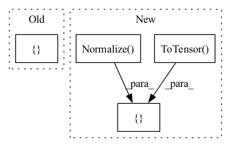

Pattern ID :10346

Before Change
def ld_cifar10():
Load training and test data.
train_transforms = torchvision.transforms.Compose([torchvision.transforms.ToTensor()])
test_transforms = torchvision.transforms.Compose([torchvision.transforms.ToTensor()])
train_dataset = torchvision.datasets.CIFAR10(root="~/datasets/", train=True, transform=train_transforms, download=True)
test_dataset = torchvision.datasets.CIFAR10(root="~/datasets/", train=False, transform=test_transforms, download=True)
After Change
def ld_cifar10():
Load training and test data.
transform = transforms.Compose(
[transforms.ToTensor(),
transforms.Normalize((0.5, 0.5, 0.5), (0.5, 0.5, 0.5))])
train_dataset = torchvision.datasets.CIFAR10(root="~/datasets/", train=True, transform=transform, download=True)
test_dataset = torchvision.datasets.CIFAR10(root="~/datasets/", train=False, transform=transform, download=True)
In pattern: SUPERPATTERN
Frequency: 3
Non-data size: 4
Instances
Fragment ID: 36315083
Project Name: openopt/chop
Commit Name: 3fd5b0958d423a4093ded6832800d53a20b3c8d0
Time: 2020-10-10
Author: geoffrey_negiar@berkeley.edu
File Name: constopt/data_utils.py
M Class Name: AnonimousClass
N Class Name: AnonimousClass
M Method Name: ld_cifar10(0)
N Method Name: ld_cifar10(0)
M Parent Class:
N Parent Class:
M File Name: constopt/data_utils.py
N File Name: constopt/data_utils.py
M Start Line: 9
M End Line: 10
N Start Line: 10
N End Line: 12
'>
Before Change
size = config.resolution
self.transform = transforms.Compose(
[
transforms.ToPILImage(),
transforms.Resize(size=int(1.1 * size)),
transforms.CenterCrop(size=size),
transforms.ToTensor(),
transforms.Normalize(mean, std),
]
)
After Change
torchvision.transforms.CenterCrop(size=config.resize),
]
transforms += [
torchvision.transforms.ToTensor(),
torchvision.transforms.Normalize(mean, std),
]
self.transform = torchvision.transforms.Compose(transforms=transforms)
'>
Fragment ID: 36315087
Project Name: kaifishr/pytorchrelevancepropagation
Commit Name: 1cedb1dc13da1746b58e096fb04b7d37ea8bd97d
Time: 2022-10-20
Author: kaifabi@posteo.net
File Name: projects/real_time_lrp/data_processing.py
M Class Name: DataProcessing
N Class Name: DataProcessing
M Method Name: __init__(3)
N Method Name: __init__(3)
M Parent Class:
N Parent Class:
M File Name: projects/real_time_lrp/data_processing.py
N File Name: projects/real_time_lrp/data_processing.py
M Start Line: 14
M End Line: 27
N Start Line: 14
N End Line: 31
'>
Before Change
torchvision.datasets.ImageNet(root=data_root, split="val", transform=transform)
testloader = torch.utils.data.DataLoader(testset, batch_size=batch_size,shuffle=False)
dataloaders = {"train":trainloader, "val":testloader}
// Walsh ordered transforms
time_start = time.perf_counter()
stat_walsh(dataloaders["train"], device, stat_root)
After Change
//
transform = torchvision.transforms.Compose(
[torchvision.transforms.functional.to_grayscale,
torchvision.transforms.RandomCrop(
size=(img_size, img_size), pad_if_needed=True, padding_mode="edge"),
torchvision.transforms.ToTensor(),
torchvision.transforms.Normalize([0.5], [0.5])
])
testset = \
torchvision.datasets.ImageFolder(root=data_root, transform=transform)
'>
Fragment ID: 36315089
Project Name: openspyrit/spyrit
Commit Name: 90a8a6b0e2267dca7caa14516cd6dd8053719d75
Time: 2022-09-06
Author: ducros@creatis.insa-lyon.fr
File Name: spyrit/misc/statistics.py
M Class Name: AnonimousClass
N Class Name: AnonimousClass
M Method Name: stat_walsh_ImageNet(6)
N Method Name: stat_walsh_ImageNet(4)
M Parent Class:
N Parent Class:
M File Name: spyrit/misc/statistics.py
N File Name: spyrit/misc/statistics.py
M Start Line: 313
M End Line: 335
N Start Line: 461
N End Line: 487